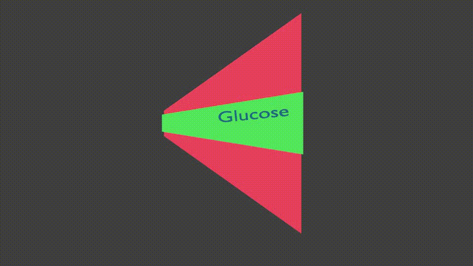
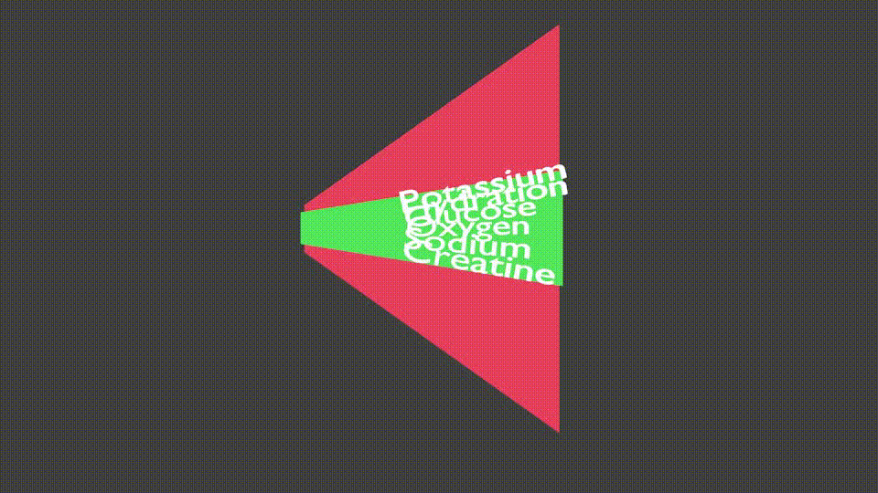
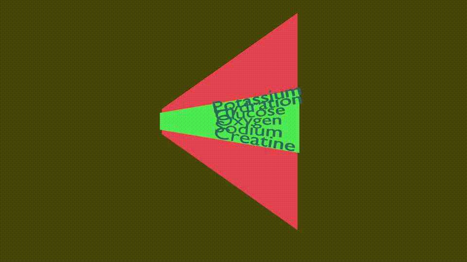

So I take very complex Machine Learning used to train robots and simplify it so that average High School students can understand it. That is what I do.
Possibly Migraines are highly complex and not easy to solve, probably why there are so many snake oil type "cures" available which probably are a mix of
helpful with the placebo effect with darn right scams.
This web site was started March 26th, 2021. Absolutely no bases in any Science, just my own thoughts after 27 years of migraine pain (Strangely correlated with the
number of years I have been a parent).
I have however had regular sugar induced headaches all my life. The difference is that regular headaches
get some relief using Tylenol. For me Migraines have a distinct prodrome a visual aura 20 minutes before pain and for which Tylenol has no effect.
I do have a Chemistry Degree and worked as a trace substance Analytical Chemist, but what does that mean.
I have a teaching degree
I also have a diploma in Counselling
I have taught Science and Physics for many years.
I also simplify Machine Learning and other complex Robotics and coding tasks for students
I now teach Robotics, Coding, Animation and 3D Printing in BC, Canada
About 20 years ago I used to make computer programs to monitor which foods correlated with my Migraines, but for the last
10 years I have just eaten a mainly meat and vegetables (typically high in Potassium) low salt diet, with minimal fruits such as : blueberries, melons, kiwi.
that has done fine at migraine prevention as long as I stick to it. Unfortunately sticking to my program means having very
little of the food listed below in the Rocksetta Migraine Prevention Testing which happen to be all the foods that taste good
For the last 10 years I have basically had about a migraine every 2 weeks, since I can't just eat meat and vegetables.
Migraine solutions
This is the part that is probably best to talk to your Doctor instead of taking advise from some hack on the internet.
This webpage is about prevention, but if I do get a migraine aura, I first try Angela Stantons
bit of salt under the tongue. If that works to reduce the aura, I have some salt in water, I then might have some creatine monohydrate in water, if that doesn't
help reduce the aura, to prevent any pain I take my 25 mg
co-sumatriptan under my tongue until it fully dissolves. It tastes terrible and I feel crappy for 24 hours, but at least I then have no pain.
The basic concept below is to set the sliders depending on how you feel you are for the three categories: Food, exercise, emotional. Then click the buttons below when you have one
of the substances that might cause migraines. Note: you can actually just drag the slider to whatever starting point you want. A cookie might be a small issue, whereas a full
plate of MSG containing Chineese food might be a large issue button to click.
Then watch the line scale and wait until you are back in the green before having another "issue" food. Note The Level Reduction Rate, that basically says how long it is predicted
to take to reduce one level. Such as going from level red to blue would take that amount of time. It is effected by the sliders.
Migraine % Chance: -->
Food:
Healthy Meals with personal amounts of Salt (NaCl), Potassium from Foods (avocado etc), Creatine from Protein (red meat/salmon or creatine monohydrate)
Junk Food. Note: table salt, is an essential nutrient, but also in Junk Foods
Exercise:
2 hour daily workout
Couch Potato
Emotional:
Mellow and breathing deeply
Stressed out or in Withdrawal, shallow breathing
Single Snacks of Issue Foods. Click the relevant buttons
Brain Concerns Graph:
In the Green Zone: theoretically less likely to have a migraine even with a short time around a migraine trigger
In The Blue Zone: be careful of multiple migraine triggers such as: Bright Lights, Aromas, Emotional Situations, Sudden Scares, High or Low blood Glucose, personal triggers ...
In The Red Zone: be careful of even one of the above triggers, until your body has had time to process the issues.
Issues Note: These are not necessarily the same as triggers Think of them as foods that may be correlated with having a migraine
within a few days of eating them.
These issues are potential preparation for a migraine. Might be very different for different people, some general ones are:
Poor Sleep, Screen Time, MSG containing foods, Emotional Situtions, Sugary Foods, Fruit, Cheeses, Preserved Food, Canned Foods, Soups, Alcohol, Deli Meats and Deli Foods,
Tyramine containing foods (Strong or aged cheeses, Smoked or processed meats, Pickled or fermented foods, Sauces,
Soybeans and soybean products,
Snow peas, broad beans (fava beans) and their pods,
Dried or overripe fruits.
Meat tenderizers or meat prepared with tenderizers,
Yeast-extract spreads,
Alcoholic beverages, such as beer — especially tap or homebrewed beer — red wine, sherry and liqueurs,
Improperly stored foods or spoiled foods),
Fast Carbs (Potatoes, White Rice, White Bread) ...
1% very very small amount of an issue
Small 5%, small serving or amount of an above issue
Medium 10% Medium amount
Large 15% Large amount of an above issue
Note: Values are automatically stored for the web browser you are working on. Check back after to see if the values have dropped. You do not need to leave your web browser open.
The rate of reduction is based on your typical: Food intake, Fitness, and emotional well being.
If your migraine prevention can pass the above steps, it might be a very good prevention for you.
If your Migraines are so life alteringly horrible that you are willing to live without the steps above you might want to try
Angela Stanton's: Salt, Potassium, Keto Protocol with
her intense facebook page at
Migraine Sufferers who Want to be Cured by the Stanton Migraine Protocol
The Rocksetta 3 McDouble, Salted Avocado Migraine Prevention
To be fair it should be called the "5 Gram Creatine, Salted Avocado Migraine Prevention", since no one should ever have 3 McDoubles a day unless they are
running a full marathon or swimming/biking for a few hours,
but that is what you might have to eat to absorb 2-5 grams of Creatine, reference here
A 2020 reference for Creatine and migraine is here
Morning have salted high Potassium low sugar foods like Avocado's, Sweat Potatoes, Mushrooms and Eggs.
During the day eat normally and hydrate with occasional small amounts of salt
Normal dinner but have more red meat/salmon and salt.
Have a bit of Creatine Monohydrate (2-5 grams) some time during the day. (Body builders use it to store energy for the brain and muscles and help retain water in the cells)
Probably all wrong, but I make decisions based on a theories
In the following GIF The green area shows many brain nutrients that have higher or lower concentrations in the green zone which is fine, whenever a
nutrient moves to the red zone their is a possiblity of a trigger firing a migraine. If many nutrients are in the red zone either too high or too low there
is an increased chance of having a trigger activate a migraine. The animation is much faster than what would happen in real life.
These Visualizations hopefully show the complexity of what might be happenning for Migraineurs in the hard to measure Intracellular fluids of Brain Cells.
Unlike the diabetic for which blood glucose monitors work well, we don't know if Blood, Sweat, Tears or Urine analysis gives an accurate measurement of what is happening for nutrients
inside brain cells.

Artistic Visualization of Blood Glucose levels fluctuating for a Diabetic

Artistic Visualization of a person who does not get Migraines
Now look at an Artistic Visualization of Multiple Nutrients fluctuating in the Intracellular fluid of brain cells

Now look at an Artistic Visualization of if the acceptable (green) levels are constantly changing based on Stress, exercise, Environmental Chemicals
Just like when the stomach is empty and the body needs nutrients we get mild discomfort, tummy rumblings then later uncomfortable hunger pains,
but when the mind needs nutrients, it causes prodromes (weird auras, tummy issues, etc look it up) and if the brain doesn't get those needed nutrients
it is primed to react to a migraine trigger: bright lights, powerful smells, emotional situations... causing the cascade effect of the pain of a migraine.
Migraineurs seem very sensitive to sugar balance, like a diabetic however with much more complex other nutrients in balance as well
The brain needs a lot of oxygen, if you get a prodrome (aura etc) trying some deep breathing.
Many modern chemicals and preservatives can effect the bodies ability to absorb the nutrients the brain needs
Stess also probably effects the bodies ability to absorb or balance electrolytes/Creatine/Glucose
Hydration helps flush some of these chemcials from your body over the course of a few days
There are lots of needed electrolytes, but the brain is very sensitive to Sodium and Potassium balance, if you hydrate then you will need more of these electrolytes
If you have a diet high in Potassium from foods you eat then (Care of Angela Stanton) the sodium balance can be achieved very quickly by putting salt under your tongue or drinking 1/8 teaspoon salt in water.
Red meats and salmon are high in Creatine which supplies energy and retains hydration for the brain and muscles. Possible Migraineurs have issues with low Creatine levels.
Body builders often use 5 grams of Creatine Monohydrate daily, for some reason this massively improved my migraine prevention.
If 5 grams Creatine (or lots of salmon and red meats) works for you, then try to reduce it to 4 grams and see if that still helps.
Also reduce your potassium foods intake and salt intake. The goal is to take only what is needed to prevent migraines.
This goal may take me a few years to achieve, possibly there are more nutrients the brain needs
I will test if during non stressful times any of this is needed and I just stick to meat and vegetable.
Perhaps only creatine, salt, potassium foods on the weekends
So far this method seems to be doing well with the tests above.
I will not know for sure if this method works fully until I start teaching school in September. Last year on startup, when I had to teach
some students in person while teaching an online class I had 5 migraines in 10 days! Obviously stress has something to do with Migraines.
Possible Migraineurs now and from History:
Note: We can assume most of these people did not have a satisfactory way of dealing with their migraines.